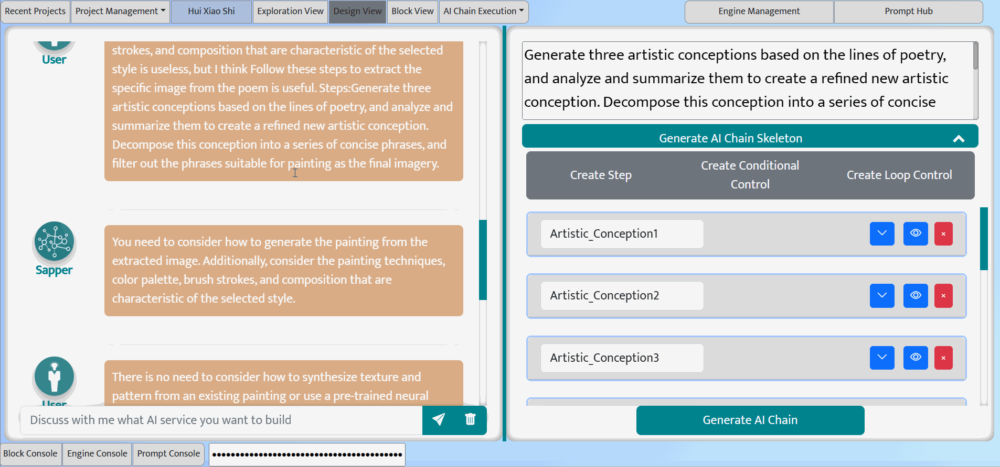

Design View
Turn your ideas into AI chain requirements and skeleton
Design view: requirement analysis chatbot (left), task requirement box (upper-right), AI chain skeleton (lower-right)
Design view supports the main activities of the design phase and plays an important role in bridging the gap between the exploration and construction phases. Therefore, it has two main functionalities: requirement analysis and AI chain skeleton generation, supported by two LLM-based co-pilots. Different from the non-intrusive co-pilot in the Exploration view, the two co-pilots in the Design view actively interact with the user to assist in requirement analysis and AI chain skeleton generation.
Requirement Analysis
On the left side of the Design view, there is a LLM-based requirement analysis chatbot. However, unlike the free-style chatbot in the Exploration view, the requirement analysis chatbot is prompted as an infinite Reserve Questioner, working as follows:
1) The conversation starts with the user's task description (usually a vague description of what the user wants), entered in the Enquiry box.
2) Based on this initial task description and the task notes (if any) collected in the Exploration view, the requirement analysis chatbot asks a series of open-ended questions to elicit the user's specific task requirements.
3) Each round of the response from the user is iteratively incorporated into the user's task description (displayed in the task requirement box in the upper-right part).
Of course, if the user believes he alreay has clear requirement and thus does not need the help of the requirement analysis co-pilot, he can directly enter the requirement in the task requirement box.
AI Chain Skeleton Generation
When the user feels the task requirement is clear and specific, they can click the Generate AI chain Skeleton button below the Task Requirement box to request the Design view to generate the main steps required to complete the task, as well as three candidate prompts for each step.
To achieve this, Design view implements a LLM-based skeleton generation co-pilot.
1) This co-pilot first converts the high-level task description into the main steps required to complete the task (similar to the ``sunny day scenario'' in use case modeling). Each step has a step name (used to identify the step output in the AI chain) and a concise step description.
2) Based on the step description, the co-pilot recommends three candidate prompts for each step. Upcoming feature: If the user has accumulated a set of prompt assets (see Prompt Hub), the co-pilot can also be set to search the prompt hub for prompts related to the step using a retrieval-based engine (such as GPT Index). Of course, the co-pilot can also be set to recommend both retrieved and generated prompts.
3) The user can manually modify the generated steps, including remove steps, add steps, or reorder steps. In the current version, the co-pilot does not generate control flow. The user can manually add control flow, including step execution conditions or step loops.
4) The user can edit the generated prompts using a structured form. In this form, the user can also set the input to the step and select the engine to execute the prompt.
5) The user can click the Generate AI Chain button at the bottom right of the Design view, and the IDE will automatically assemble a block-based AI chain according to the AI chain skeleton, which can be viewed, edited, and executed in the Block view